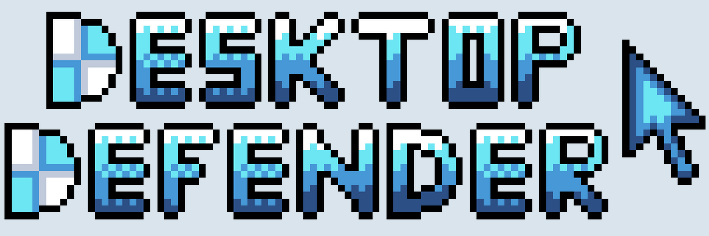

BBB Computer Lab - Programmer

This project was my first chance to put Unreal's VR tools to use. My partner and I recreated the computer lab from the University of Michigan. Together we created an affordance system to implement several different interactions around the lab including fire alarms and white boards. To coordinate the completion of these tasks, we used Jira to manage our workflow.
In addition to completing some assigned tasks, we had to create our own custom interaction for our project. We decided to add a hololens which players could put on their head. Once they did, the "CS Project Shooter" would start, where the player would have to shoot down approaching computer science projects.
Desktop Defender - Programmer, Enemy Designer
Desktop Defender is a cooperative bullet-hell game where two players fight waves of viruses attacking their computer. Players take the roles of cursor and antivirus and must combine their different abilities to win. This game was my final project for EECS 494 where I collaborated with four other students to create a complete game Unity. Using Jira, we were able to coordinate tasks to meet weekly deadlines. We also took advantage of the Event Bus design pattern to coordinate communication between game objects.

My main role on the project was as an enemy designer. I created and programmed all of the various viruses players face while using composition to reuse behaviors between enemies. I even got a chance to design two unique bosses with difficult attack patterns. On top of these responsibilities, I also created most of the art for the game including the logo and enemies.
Play Game